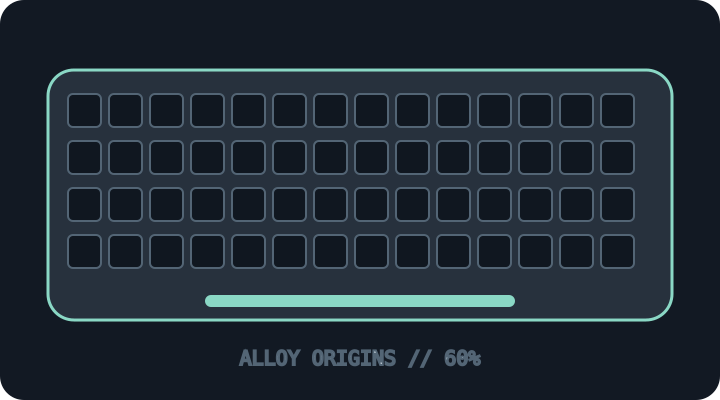

[ KEYBOARDS AND INTEGRATED POINTING DEVICES // IDENTIFIED SKU ]
HyperX Alloy Origins 60 (4P5N4AA)
Portable 60% wired mechanical keyboard with full aluminum body and detachable USB-C cable.

MODEL IDENTIFICATION: 4P5N4AA — US Alloy Origins 60 / HyperX Red configuration identifier; confirm complete regional suffix and switch option. This archive entry identifies a real manufacturer product/variant; physical labels and dated manuals supersede generalized family descriptions.
Model specifications
| Catalog subcategory | Keyboards and integrated pointing devices |
|---|---|
| Exact model / SKU | 4P5N4AA — US Alloy Origins 60 / HyperX Red configuration identifier; confirm complete regional suffix and switch option. |
| Layout and key arrangement | 60% US ANSI arrangement with secondary functions printed on the PBT keycaps; dedicated arrows, function row and numeric keypad are omitted. |
| Switch type / mechanism | HyperX mechanical switch build, commonly HyperX Red linear for this identifier; HyperX Aqua tactile and regional options exist. Switches are not specified as hot-swappable. |
| Interface and protocol | Wired USB-C data connection via detachable cable; no Bluetooth/receiver mode. NGENUITY software is used for supported lighting and macro features. |
| Key rollover / anti-ghosting | HyperX advertises 100% anti-ghosting and full N-key rollover. Confirm firmware/software and host behavior when validating the individual unit. |
| External dimensions | Approximately 296.0 × 105.5 × 36.9 mm (width × depth × height). This is the 60% chassis; verify a physical unit and regional keycap build. |
| OS and host compatibility | USB keyboard works as a standard HID input on compatible hosts. Full macro, profile and lighting customization uses HyperX NGENUITY on supported Windows systems; do not assume the software runs on every host. |
| Revision / regional caveat | Alloy Origins 60 differs from Alloy Origins 65 and full-size Origins. Switches, language layout and SKU suffix vary; 4P5N4AA/product-family naming can be confused with other regional 4P5N variants. |
Preservation and service notes
Save lighting/macro profiles and record switch type before cleaning. Use the detachable cable specified by the vendor, avoid liquid ingress, and preserve the original secondary-function keycaps.
Record the as-found SKU/revision, host OS and version, connection method, firmware, keymap and test method. Do not infer rollover or compatibility from the connector alone; clearly separate unpublished manufacturer specifications from tested observations.
Manufacturer sources
- HyperX Alloy Origins 60 product pageManufacturer model page describing the 60% chassis and HyperX switch family.
- HyperX NGENUITY softwareManufacturer customization resource for supported HyperX devices, including lighting and profile configuration.
Manufacturer pages can be revised or retired. Retain the applicable dated manual/specification with the physical equipment record.